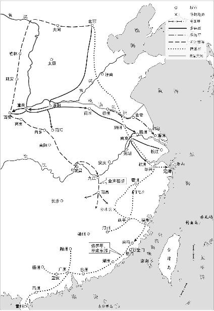

弘光朝廷的督师大学士史可法是“联虏平寇”方针的主要倡导者和执行者。1644年十二月，赴北京“酬虏通好”的如意算盘遭到清方断然拒绝，正使左懋第、副使马绍愉被拘留，陈洪范回到南京，除了掩盖自己暗中降清的种种无耻行径以外，也报告了北使的失败。史可法在奏疏中说：“向所望者，和议获成，我因合敌之力以图贼，而遂其复仇雪耻之举。今使旋而兵踵至，和议已断断无成矣。向以全力图寇而不足者，今复分以御敌矣。”“今和议不成，惟有言战。”426似乎他在考虑同清军作战了。然而，史可法的真实意图仍然是尽量避免同清方兵戎相见，继续一厢情愿地谋求与清军配合镇压大顺农民军。

1645年（弘光元年、顺治二年）初，史可法亲自安排了高杰率军北上，这是弘光朝廷唯一一次向黄河流域推进的军事行动。只是进军的目的不是针对清廷，而是想在扑灭“流寇”中充当清军的盟友。正月初九日，他奏称：“陈潜夫（河南巡按）所报，清豫王自孟县渡河，约五六千骑，步卒尚在覃怀，欲往潼关，皆李际遇接引，长驱而来，刻日可至。据此，李际遇降附确然矣。况攻邳之日，未返济宁，岂一刻忘江北哉！请命高杰提兵二万，与张缙彦直抵开、雒，据虎牢；刘良佐贴防邳、宿。”427可见，史可法的部署是明军北上至开封地区后即向西面荥阳、洛阳一带推进。高杰出师时，也曾给驻守黄河北岸的清肃亲王豪格写信，信中说：“关东大兵，能复我神州，葬我先帝，雪我深怨，救我黎民。前有朝使谨赍金币，稍抒微忱。独念区区一介，未足答高厚万一，兹逆成跳梁西晋，未及授首，凡系臣子及一时豪杰忠义之士，无不西望泣血，欲食其肉而寝其皮，昼夜卧薪尝胆，惟以杀闯逆、报国仇为亟。贵国原有莫大之恩，铭佩不暇，岂敢苟萌异念，自干负义之愆。杰猥以菲劣，奉旨堵河，不揣绵力，急欲会合劲旅，分道入秦，歼逆成之首，哭奠先帝。……若杰本念，千言万语，总欲会师剿闯，以成贵国恤邻之名。且逆成凶悖，贵国所恶也；本朝抵死欲报大仇，贵国念其忠义，所必许也。本朝列圣相承，原无失德，正朔承统，天意有在。三百年豢养士民，沦肌浃髓，忠君报国，未尽泯灭，亦祈贵国之垂鉴也。”428高杰信中一再表达的“会师剿闯”显然体现了史可法的意图，以“分道入秦”夹攻大顺军向清廷表明弘光朝廷并非如清方指责的那样“不出一兵一卒”，以便在幻想中的和谈里给自己增添一点筹码。可是，清廷征服全国的方针已经确定，根本不愿考虑联合南明的问题了。豪格在回信中乘机再次招降，而对“合兵剿闯”则不予理会，全信如下：“肃王致书高大将军，钦差官远来，知有投诚之意，正首建功之日也。果能弃暗投明，择主而事，决意躬来，过河面会，将军功名不在寻常中矣。若第欲合兵剿闯，其事不与予言，或差官北来，予令人引奏我皇上。予不自主。此复。”429
1645年（弘光元年）正月初十日，高杰同河南巡抚越其杰、巡按陈潜夫带领军队来到睢州。镇守该地的明河南总兵许定国已经秘密同清方勾结，并且按照豪格的要求把儿子许尔安、许尔吉送往黄河北岸清军营中充当人质。430高杰大军进抵睢州使许定国惶恐不安，进退失据。他深知自己的兵力敌不过高杰，请求豪格出兵支援又遭到拒绝，只有横下心来铤而走险。他一面出城拜见高杰，谬为恭敬；一面暗中策划对付办法。高杰已经知道了许定国把儿子送入清营的消息，为防止他率领部下把睢州地区献给清朝，想凭借自己的优势兵力胁迫许定国及其部众随军西征。十二日，许定国在睢州城里大摆筵席，名义上是为高杰、越其杰、陈潜夫接风洗尘。越其杰劝告高杰不要轻易进入睢州城，以防变生意外。高杰一介武夫，自以为兵多势重，许定国绝不敢轻举妄动，只带了三百名亲兵进城赴宴，越其杰、陈潜夫陪同前往。许定国事先埋伏下军队，用妓女劝酒，把高杰等人灌得酩酊大醉。半夜，伏兵猝发，把高杰和随行兵卒全部杀害，越其杰、陈潜夫惊慌失措，逃出睢州。431第二天，高杰部众得知主将遇害，愤恨不已，立即攻入睢州对军民大肆屠杀，进行报复；许定国率部过河投降清朝。432
高杰死后，军中无主，部下兵马乱成一团。黄得功等又想乘机瓜分高杰部的兵马和地盘，双方剑拔弩张。“时人为之语曰：谁唤番山鹞子来（高杰在农民军中绰号翻山鹞），闯仔不和谐（黄得功号黄闯子）。平地起刀兵，夫人来压寨（原注：邢夫人也），亏杀老媒婆（原注：史公也），走江又走淮，俺皇爷醉烧酒全不睬。”433史可法出兵配合清军“讨贼”的计划全盘落空了，他十分伤心，亲自赶往高军营中做善后工作，立高杰子为兴平世子，外甥李本深为提督，胡茂祯为阁标大厅（中军），李成栋为徐州总兵。高杰妻邢氏担心儿子幼小，不能压众，她知道史可法没有儿子，提出让儿子拜史可法为义父。这本来是史可法增进同高部将士感情的一个机会，然而史可法却因为高部是“流贼”出身，坚决拒绝，命高杰子拜提督江北兵马粮饷太监高起潜为义父。434由此可见史可法政治偏见之深和不通权变。
二月间，史可法从徐州回到白洋口（今江苏省宿迁市境洋河）。当时正值清军主力在阿济格、多铎带领下追击大顺军，聚集于陕西，河北、山东、河南一带的清军并不多。例如，1645年正月奉命驻守山东的肃亲王豪格在奏疏中报告许定国送儿子为人质后请他派兵渡河“卫其眷属，臣因未奉上命，不敢渡河”。高杰统兵进抵睢州城外，许定国担心脱不了身，派人请求豪格火速来援；豪格仍以“未经奉旨，不敢擅往”为由，拒不发兵。435清廷和豪格在这段时间里表现出罕有的持重，证明阿济格、多铎两军西进后，清方在包括北京在内的整个东部兵力非常单薄。何况，清政府在畿辅、山西、河南、山东的统治尚未稳固，不仅曹州满家洞等地的农民抗清活动如火如荼，士大夫中心向明朝的也大有人在。睢州之变，高杰作为一军主帅遭暗算，他的部下实力并没有多大损失。史可法本来应该趁高杰部将因许定国诱杀主帅投降清朝的敌忾之心，改弦易辙，做出针对清方的战略部署，至少也应利用许定国逃往黄河以北，清军无力南下的时机，稳定河南局势。可是，他在高杰遇害后却失魂丧魄，仓皇南逃。沛县著名文人阎尔梅当时正在史可法幕中，劝他“渡河复山东，不听；劝之西征复河南，又不听；劝之稍留徐州为河北望，又不听”436，“一以退保扬州为上策”，即所谓：“左右有言使公惧，拔营退走扬州去。两河义士雄心灰，号泣攀辕公不驻。”437这就是被许多人盛誉为“抗清英雄”的史可法的本来面目。
注释
- 426《史可法集》卷二《和议不成请励战守疏》。
- 427计六奇《明季南略》。按，此书商务印书馆版卷七、中华书局版卷三均作“单怀”，当系“覃怀”之误，指河南省怀庆府武陟县一带。
- 428《明季南略》商务印书馆排印本卷七，又见张岱《石匮书后集》卷三十八《高杰传》，文字略有不同。
- 429《明季南略》卷七。
- 430顺治二年二月初六日许定国给清廷奏本，见《明清档案》第二册，A2—138号。有的史籍记许定国二子名尔忠、尔显，误。
- 431郑廉《豫变纪略》卷八记睢州之变于正月十二日，李清《南渡录》所记同。戴笠、吴乔《流寇长编》卷十九记十二日高杰率兵五百入城，十三日夜被许定国袭杀。康熙《睢州志》记于正月十三日。
- 432参见《南渡录》卷四。《明清档案》第二册，A2—158号，镇守河南挂镇北将军印总兵官许定国奏本，封面朱批：许“定国计杀高杰，归睢有功，知道了。征南大兵不日即至河南”，云云。
- 433应廷吉《青燐屑》。
- 434应廷吉《青燐屑》。
- 435《清世祖实录》卷十三。
- 436阎尔梅《阎古古全集》卷二《已矣歌》引。
- 437阎尔梅《阎古古全集》卷二《惜扬州》诗并引。